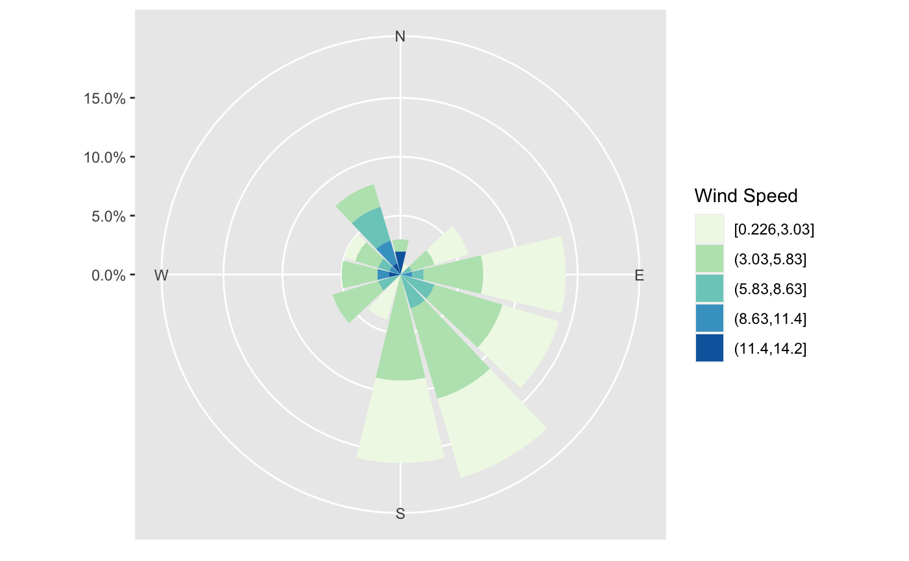
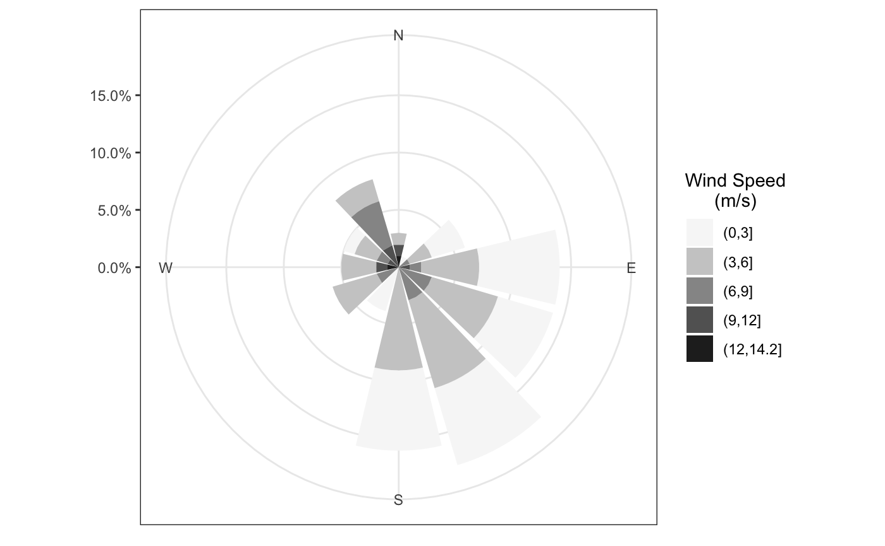
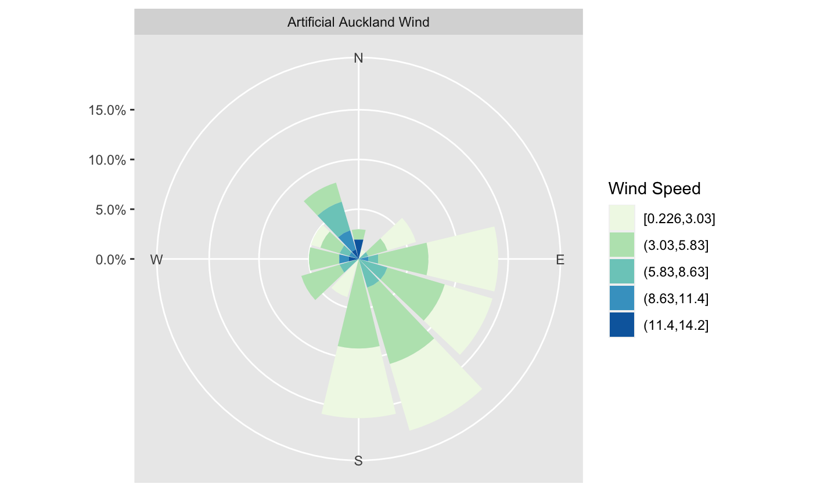
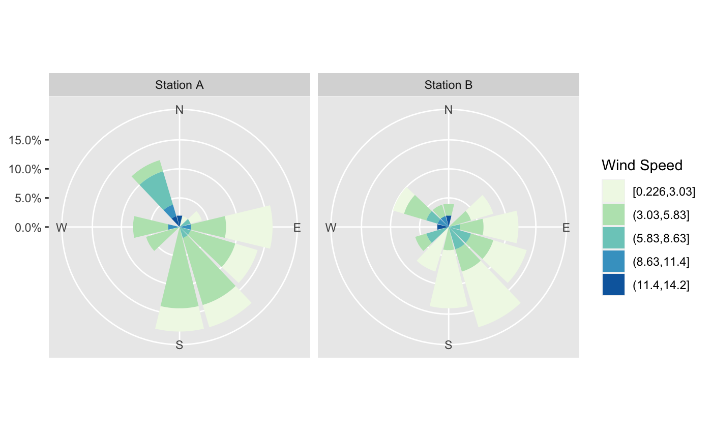

windrose.RdPlot a windrose showing the wind speed and direction for given facets using ggplot2.
windrose( speed, direction, facet, n_directions = 12, n_speeds = 5, speed_cuts = NA, col_pal = "GnBu", ggtheme = c("grey", "gray", "bw", "linedraw", "light", "minimal", "classic"), legend_title = "Wind Speed", calm_wind = 0, variable_wind = 990, n_col = 1, ... )
| speed | numeric vector of wind speeds. |
|---|---|
| direction | numeric vector of wind directions. |
| facet | character or factor vector of the facets used to plot the various windroses. |
| n_directions | the number of direction bins to plot (petals on the rose). The number of directions defaults to 12. |
| n_speeds | the number of equally spaced wind speed bins to plot. This is
used if |
| speed_cuts | numeric vector containing the cut points for the wind speed
intervals, or |
| col_pal | character string indicating the name of the
|
| ggtheme | character string (partially) matching the
|
| legend_title | character string to be used for the legend title. |
| calm_wind | the upper limit for wind speed that is considered calm (default 0). |
| variable_wind | numeric code for variable winds (if applicable). |
| n_col | The number of columns of plots (default 1). |
| ... | further arguments passed to |
a ggplot object.
This is intended to be used as a stand-alone function for any wind dataset. A
different windrose is plotted for each level of the faceting variable which
is coerced to a factor if necessary. The facets will generally be the station
where the data were collected, seasons or dates. Currently only one faceting
variable is allowed and is passed to facet_wrap with
the formula ~facet.
This is a modified version of the function adapted from clifro. This version adds the viridis colour scales.
For black and white windroses that may be preferred if plots are to be used
in journal articles for example, recommended ggthemes are 'bw',
'linedraw', 'minimal' or 'classic' and
the col_pal should be 'Greys'. Otherwise, any of the sequential
brewer.pal.info or discrete palettes from
viridis.pal colour palettes are recommended for colour
plots.
theme for more possible arguments to pass to
windrose.
# Create some dummy wind data with predominant south to westerly winds, and # occasional yet higher wind speeds from the NE (not too dissimilar to # Auckland). wind_df = data.frame(wind_speeds = c(rweibull(80, 2, 4), rweibull(20, 3, 9)), wind_dirs = c(rnorm(80, 135, 55), rnorm(20, 315, 35)) %% 360, station = rep(rep(c("Station A", "Station B"), 2), rep(c(40, 10), each = 2))) # Plot a simple windrose using all the defaults, ignoring any facet variable with(wind_df, windrose(wind_speeds, wind_dirs))# Create custom speed bins, add a legend title, and change to a B&W theme with(wind_df, windrose(wind_speeds, wind_dirs, speed_cuts = c(3, 6, 9, 12), legend_title = "Wind Speed\n(m/s)", legend.title.align = .5, ggtheme = "bw", col_pal = "Greys"))# Note that underscore-separated arguments come from the windrose method, and # period-separated arguments come from ggplot2::theme(). # Include a facet variable with one level with(wind_df, windrose(wind_speeds, wind_dirs, "Artificial Auckland Wind"))# Plot a windrose for each level of the facet variable (each station) with(wind_df, windrose(wind_speeds, wind_dirs, station, n_col = 2))